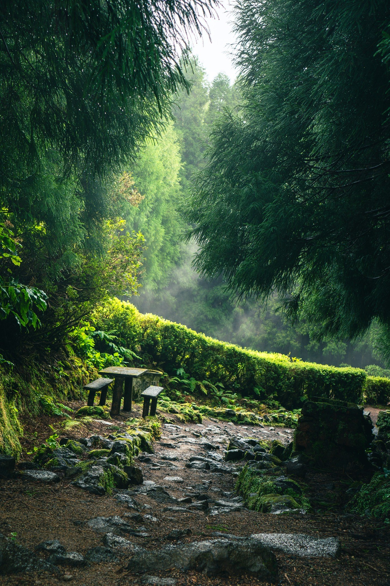

Thresholds
Lit Threshold
Glass, night and a body at the edge of entry.
A living archive of quiet places, human traces, ritual spaces and landscapes held in memory.

An expanded but curated repository of selected photographs: thresholds, human traces, ritual spaces, silent landscapes, urban voids and memory rooms.
Thresholds. Ritual spaces. Human traces. Landscapes as memory.
The archive is organized by atmosphere rather than genre. Images enter the sequence when place, figure and light create distance.
Glass, night and a body at the edge of entry.
Bodies, time, preservation.
A village suspended in storm light.
A geometric trace in the dark.
Hands, matter and concentration.
Color, prayer flags and sacred geometry.
Raven Olisaro is a photographic archive about places that seem to retain a human trace.
The work moves through quiet interiors, ritual spaces, thresholds, urban voids and atmospheric landscapes, looking for the point where place becomes memory.
The Trace Archive collects selected photographic works across Europe, South America and Asia, following thresholds, ritual gestures, quiet interiors, atmospheric landscapes, urban voids and human traces.
For prints, collaborations, archive selections or selected projects: